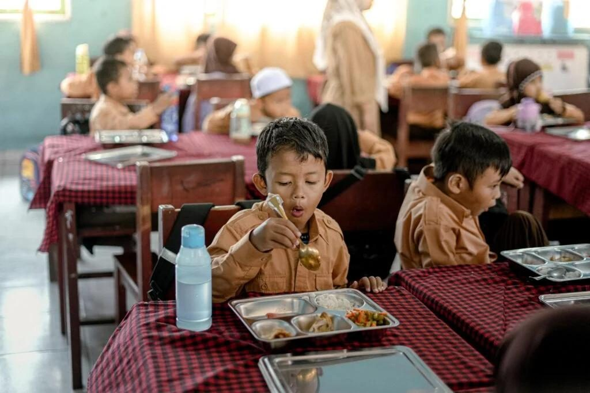
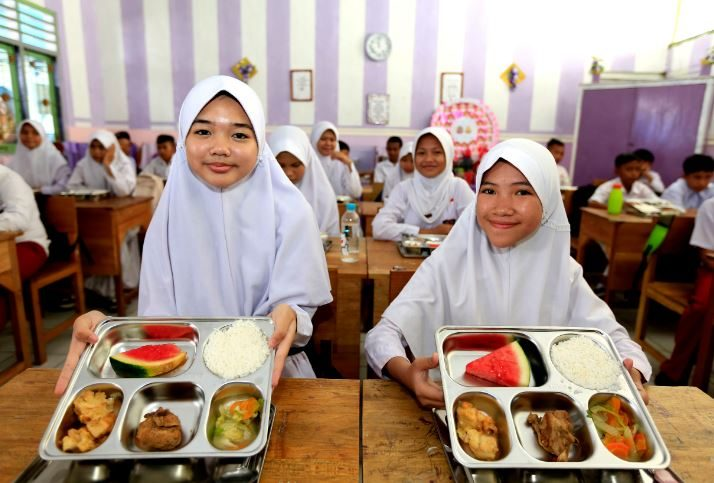
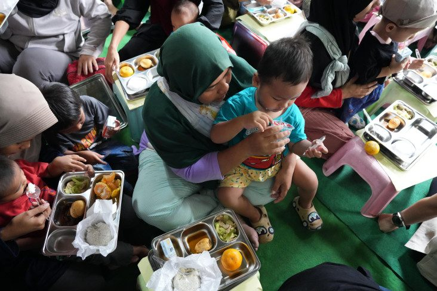
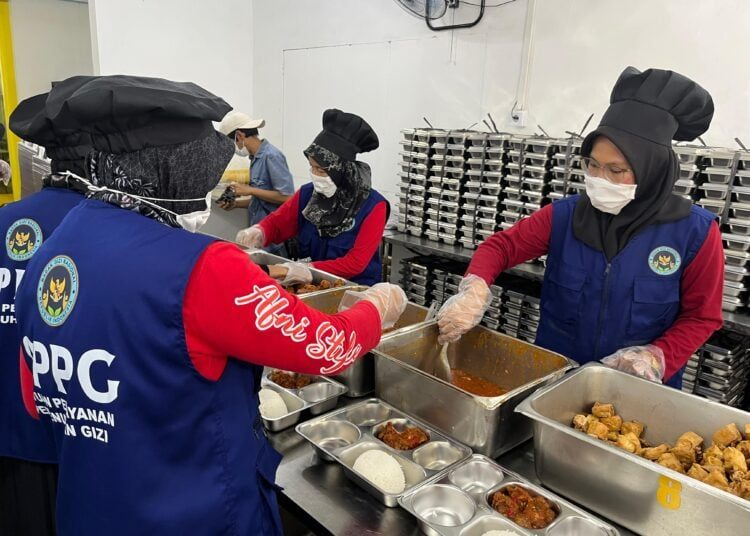
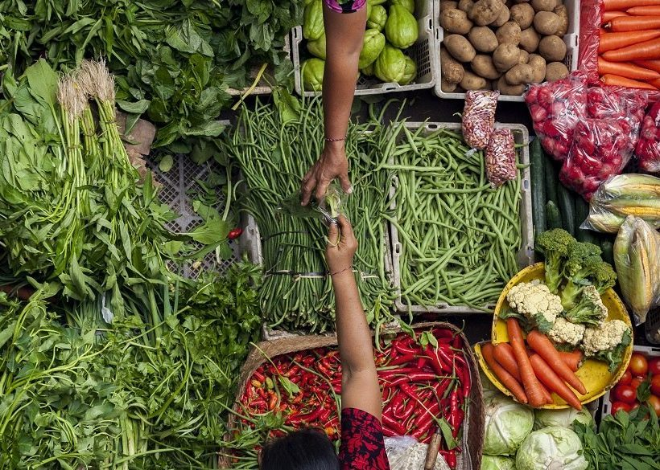
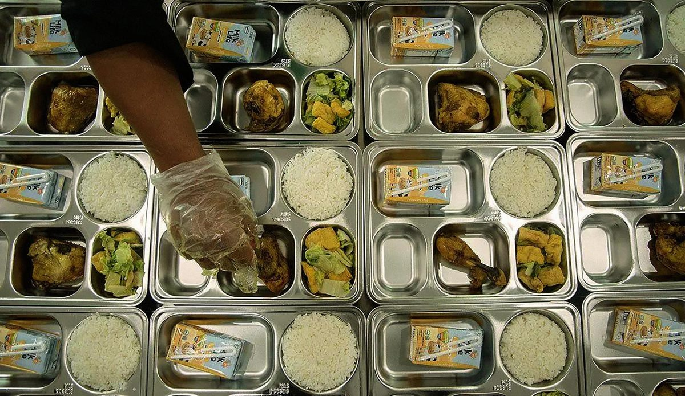
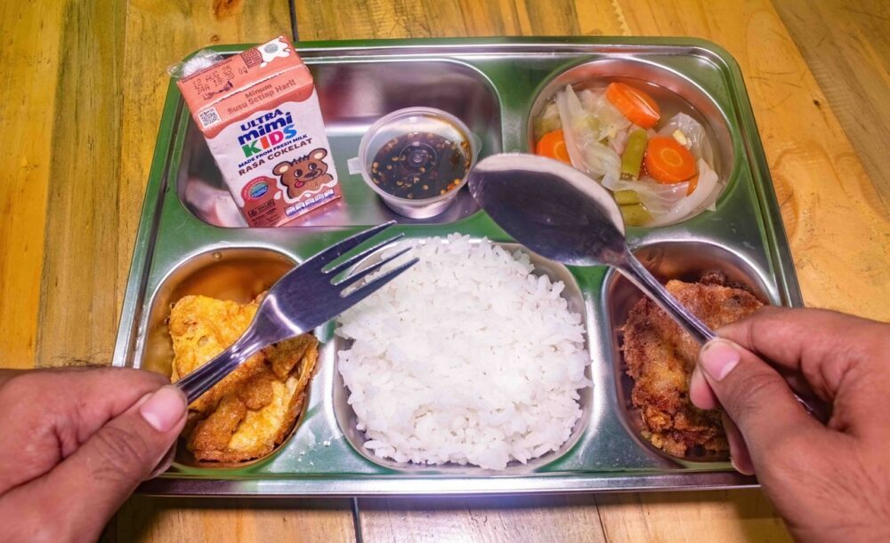

46,2 juta
Peserta didik
Anak PAUD, pendidikan dasar dan menengah — umum, kejuruan, keagamaan, pendidikan khusus dan layanan khusus, termasuk santri pesantren.
Program Prioritas Nasional · Badan Gizi Nasional
Program pemberian makanan bergizi yang tepat sasaran untuk meningkatkan kualitas sumber daya manusia melalui peningkatan status gizi — dijalankan Badan Gizi Nasional (BGN) sejak 6 Januari 2025 bagi peserta didik, balita, ibu hamil, ibu menyusui, dan sejak 2026 juga pendidik dan tenaga kependidikan.
Seluruh angka di halaman ini berasal dari sumber resmi pemerintah (BGN, Kemenkeu, Kemenkes, Kemendikdasmen) atau peliputan atas pernyataan resmi, dengan tanggal dan status verifikasi dicantumkan. Data per 3 November 2026.

Data Terkini
MBG tumbuh dari 190 SPPG di 26 provinsi pada hari pertama menjadi puluhan juta penerima. Penurunan angka pada September–Oktober 2026 bukan penurunan layanan: BGN memvalidasi data dan menghapus jutaan data ganda serta penerima yang tidak sesuai kriteria (misalnya santri yang tercatat ganda sebagai siswa madrasah), sementara definisi SPPG diperketat menjadi dapur yang terverifikasi dan memenuhi standar.
Program mulai Januari 2025. Angka September 2026 menurut Kemenkeu; angka Oktober 2026 hasil validasi BGN.
Sumber: BGN, Kemenkeu (APBN KiTa), Kantor Staf Presiden, dan RDP BGN–Komisi IX DPR, sebagaimana dirinci pada bagian Sumber. Angka tiap titik berasal dari pernyataan resmi pada tanggalnya masing-masing dengan definisi yang dapat berbeda antarperiode.
Sasaran Penerima
Kelompok sasaran diatur dalam Perpres 83/2024 dan diperluas oleh Perpres 115/2025. Komposisi penerima per 9 Oktober 2026 (penetapan penerima manfaat sementara, total 57.491.334 orang) menunjukkan peserta didik sebagai kelompok terbesar.

Anak PAUD, pendidikan dasar dan menengah — umum, kejuruan, keagamaan, pendidikan khusus dan layanan khusus, termasuk santri pesantren.

Balita (anak di bawah 5 tahun, mulai usia 6 bulan), ibu hamil, dan ibu menyusui — kelompok kunci pada 1.000 Hari Pertama Kehidupan. Pada pertengahan Juni 2026 kelompok ini masih sekitar 16,5% dari total penerima.

Kelompok sasaran baru pada 2026 menurut Perpres 115/2025 — guru dan tenaga kependidikan sebagai bagian dari ekosistem pendidikan nasional, dikonfirmasi siaran pers BGN 8 Mei 2026.
Keunggulan & Keuntungan
Manfaat berikut adalah klaim resmi BGN, Kemendikdasmen, dan Kemenkes beserta angka pendukungnya. Di tiap bidang, halaman ini membedakan mana yang sudah berupa angka terukur dan mana yang masih berupa mekanisme serta observasi — karena hingga November 2026 pemerintah belum mempublikasikan evaluasi dampak kausal MBG secara nasional.
BGN menyebut MBG sebagai langkah strategis memperkuat kualitas SDM dan ketahanan pangan, dilatarbelakangi beban ganda malnutrisi (triple burden: stunting, kekurangan gizi, dan kelebihan gizi terjadi bersamaan). Setiap porsi dirancang mengikuti Angka Kecukupan Gizi (AKG) menurut kelompok umur dan kondisi fisiologis.
Catatan kejujuran: penurunan stunting 2023–2024 terjadi sebelum MBG berjalan penuh (program mulai Januari 2025), sehingga tidak dapat diklaim sebagai dampak MBG. Hingga riset ini dibuat, belum ada hasil SSGI 2025/2026 atau evaluasi dampak resmi MBG terhadap status gizi anak.
Kemendikdasmen menyatakan status gizi yang baik berperan besar mendukung perkembangan kognitif, daya konsentrasi, dan prestasi akademik. MBG sekaligus menjadi sarana pendidikan karakter — berdoa sebelum makan, kebersihan, tanggung jawab, kemandirian, kebersamaan, dan kesantunan — dengan UKS (Usaha Kesehatan Sekolah) sebagai ujung tombak dan data penerima terintegrasi Dapodik.
Catatan kejujuran: pernyataan BGN bahwa kehadiran di sekolah penerima MBG lebih dari satu tahun “meningkat hingga 99%” adalah observasi BGN yang dikutip Kemendikdasmen, bukan angka kehadiran nasional sebelum–sesudah dengan kelompok pembanding. Evaluasi dampak pendidikan MBG yang terukur belum dipublikasikan resmi.

Peraturan BGN Nomor 10 Tahun 2026 mewajibkan SPPG melibatkan pelaku usaha setempat — diprioritaskan yang berdomisili di kecamatan yang sama — dan mengutamakan produk dalam negeri dari pertanian, peternakan, perikanan, perkebunan, dan industri. Pelakunya mencakup usaha mikro dan kecil, koperasi, Koperasi Desa/Kelurahan Merah Putih, dan BUMDes.
Catatan: definisi pemasok berubah antarperiode (misalnya 94.056 pemasok termasuk 38.938 UMKM menurut KSP pada Maret 2026), sehingga angka antarbulan tidak dapat dirangkai sebagai satu tren. Angka dampak PDB atau pendapatan petani yang terverifikasi belum tersedia dari sumber resmi.
MBG dirancang menjangkau kelompok yang selama ini paling sulit mengakses makanan bergizi: anak di pesantren, wilayah 3T, dan keluarga miskin. BGN menyatakan program ini mendukung pengentasan kemiskinan dan pertumbuhan ekonomi masyarakat lokal, dengan layanan yang dialihkan ke SPPG terdekat apabila sebuah dapur dihentikan — penerima tidak dibiarkan tanpa layanan.
Standar Gizi & Menu
BGN tidak menetapkan satu menu nasional yang seragam. Yang ditetapkan adalah standar komposisi gizi: menu disusun Pengawas Gizi di setiap SPPG dari pangan lokal, mengikuti Angka Kecukupan Gizi (AKG) dalam Permenkes Nomor 28 Tahun 2019 — rata-rata nasional 2.100 kkal energi dan 57 gram protein per orang per hari pada tingkat konsumsi.

Acuan: artikel resmi BGN ARTIKEL-01/BGN/01/2025 tentang pelaksanaan bertahap MBG.
Kebutuhan energi dan protein harian menurut Permenkes 28/2019 — acuan penyusunan menu MBG untuk tiap jenjang. Pilih kelompok:
Tabel statis ini memuat data yang sama dengan penjelajah interaktif di atas, agar mesin pencari dapat membaca seluruh angkanya.
| Kelompok umur | Energi (kkal/hari) | Protein (gram/hari) | Keterangan |
|---|---|---|---|
| 1–3 tahun | 1.350 | 20 | Kelompok balita — sasaran MBG mulai usia 6 bulan (kategori di bawah 5 tahun). |
| 4–6 tahun | 1.400 | 25 | Usia PAUD/taman kanak-kanak. |
| 7–9 tahun | 1.650 | 40 | Usia sekolah dasar awal. |
| Laki-laki 10–12 tahun | 2.000 | 50 | Usia sekolah dasar akhir. |
| Perempuan 10–12 tahun | 1.900 | 55 | Usia sekolah dasar akhir. |
| Laki-laki 13–15 tahun | 2.400 | 70 | Usia SMP — kebutuhan energi meningkat pesat. |
| Perempuan 13–15 tahun | 2.050 | 65 | Usia SMP. |
| Laki-laki 16–18 tahun | 2.650 | 75 | Usia SMA/SMK — kebutuhan tertinggi pada kelompok anak. |
| Perempuan 16–18 tahun | 2.100 | 65 | Usia SMA/SMK — sama dengan rata-rata energi nasional per orang per hari. |
Sumber: tabel AKG Permenkes 28/2019.
Cara Kerja
Struktur pelaksana bertingkat: BGN di pusat menetapkan kebijakan dan mengawasi, KPPG mengoordinasikan wilayah, dan SPPG — dapur MBG — memasak serta mendistribusikan makanan setiap hari layanan.
Lembaga di bawah dan bertanggung jawab langsung kepada Presiden (Perpres 83/2024). Berfungsi merumuskan kebijakan teknis, mengoordinasikan program, serta memantau dan mengawasi pemenuhan gizi nasional. Kepala BGN adalah pengguna anggaran program.
Unit pelaksana teknis BGN di daerah yang bertanggung jawab kepada Kepala BGN, mengawasi dan mengoordinasikan SPPG di wilayahnya (Perpres 115/2025).
Unit layanan yang menyediakan dan mendistribusikan makanan serta edukasi gizi dan keamanan pangan. SPPG aglomerasi melayani minimal 1.000 penerima; mitra yayasan/lembaga berbadan hukum menyiapkan bangunan dan peralatan sesuai standar.
Menyusun menu berbasis pangan lokal dan AKG per jenjang, memastikan komposisi gizi tiap porsi.
Mengawal penggunaan dana operasional dapur dan pelaporan keuangan SPPG.
Mengawasi higiene dan sanitasi dapur. Sertifikat Laik Higiene Sanitasi (SLHS) dari Dinas Kesehatan adalah syarat mutlak operasional SPPG.

Anggaran
Sumber pendanaan MBG adalah APBN (Perpres 83/2024 juga membuka sumber lain yang sah dan tidak mengikat). Pagu awal BGN 2026 sebesar Rp268 triliun diefisiensikan sekitar Rp38 triliun menjadi pagu efektif Rp229 triliun. Angka Rp335 triliun yang sempat beredar pada 2025 adalah angka RAPBN/wacana awal, bukan pagu resmi.
| Tahun / tahap | Pagu | Realisasi | Catatan |
|---|---|---|---|
| 2025 | Rp71 T | ±Rp51,5 T | Serapan ±72,7% dari pagu awal; dilaporkan BGN dalam RDP Komisi IX DPR (Juli 2026), termasuk tunggakan Rp1,609 T yang dialihkan ke DIPA 2026. Basis pagu antar-sumber tidak tunggal (ada rincian belanja barang Rp73 T dan outlook Kemenkeu Rp116,6 T), sehingga persentase bergantung pada basis yang dipakai. |
| 2026 — pagu awal | Rp268 T | — | DIPA awal BGN (UU 7/2025 tentang APBN 2026): ±Rp255,5 T program pemenuhan gizi nasional + ±Rp12,4 T dukungan manajemen. |
| 2026 — pagu efektif | Rp229 T | Rp153,19 T s.d. 30 Sep 2026 | Efisiensi ±Rp38 T (pernyataan Dirjen Anggaran Kemenkeu, APBN KiTa 9 Oktober 2026). Realisasi setara 66,9% pagu efektif, melayani 57 juta penerima melalui 27.486 SPPG. Akhir Oktober 2026 Kepala BGN menyebut Rp165 triliun telah digunakan dari 26.723 dapur terverifikasi (angka bulat, peliputan). |
| 2027 — pagu BGN | Rp240,20 T | — | Disepakati dalam RDP September 2026 dan pengesahan APBN 2027; ±Rp232,5 T di antaranya untuk MBG dengan target 72.464.886 penerima. |
Skema yang disampaikan Kepala BGN pada 5 Oktober 2026. Sejak tanggal yang sama, insentif dihitung Rp2.000 per porsi yang benar-benar disalurkan — menggantikan skema Rp6 juta per hari per SPPG — sehingga SPPG yang disuspend, libur, atau terdampak bencana tidak menerima insentif.
Status: skema ini berasal dari pernyataan Kepala BGN yang diliput media (dasar yang disebut: Peraturan BGN 13/2026 dan SK Kepala BGN 63527/2026); teks juknisnya tidak dibuka dalam riset ini. Varian harga per zona wilayah yang beredar di sumber non-pemerintah tidak digunakan di halaman ini karena tidak terverifikasi resmi.
Catatan Resmi & Perbaikan
Keunggulan MBG berjalan bersama catatan serius yang diakui dan ditindaklanjuti pemerintah — terutama keamanan pangan dan ketepatan data. Bagian ini memuatnya apa adanya, dari pernyataan resmi.
Angka kumulatif korban keracunan sepanjang 2026 yang beredar dari sumber non-pemerintah (mengutip pembacaan data Kemenkes di DPR) tidak ditemukan dalam rilis BGN/Kemenkes yang dibuka dalam riset ini, sehingga tidak dijadikan angka utama di halaman ini.
Membentuk BGN sebagai lembaga di bawah dan bertanggung jawab kepada Presiden; mengatur tugas pemenuhan gizi nasional dan kelompok sasaran awal: peserta didik, anak di bawah 5 tahun, ibu hamil, dan ibu menyusui. Diundangkan 15 Agustus 2024.
Menetapkan MBG sebagai salah satu dari 77 Proyek Strategis Nasional (PSN) baru dengan lokasi nasional dan BGN sebagai koordinator.
Mengatur perencanaan, standar menu/gizi, keamanan pangan, distribusi, pengadaan, pemantauan, evaluasi, dan pendanaan; memperluas sasaran kepada pendidik dan tenaga kependidikan; mendefinisikan KPPG dan SPPG.
Pedoman pelaksanaan pusat dan daerah: pelaksanaan bertahap di 38 provinsi mengikuti kesiapan SPPG, dengan indikator ±35.270 SPPG operasional dan ±82,9 juta penerima.
Mewajibkan pelibatan pelaku usaha setempat dan prioritas produk dalam negeri, sebagai tindak lanjut Pasal 38 ayat (3) Perpres 115/2025; melarang mark-up harga dan imbalan/komisi.
Acuan kebutuhan zat gizi harian per kelompok umur, jenis kelamin, aktivitas, dan kondisi fisiologis — termasuk untuk penyelenggaraan makanan institusi seperti MBG.
Catatan: teks lengkap Perpres 83/2024 dan 115/2025 dikutip dari hasil indeks JDIH resmi dan dikonfirmasi siaran pers BGN; untuk keperluan dokumen hukum, kutipan pasal perlu dicek ulang ke JDIH Sekretariat Negara.
Tanya Jawab
Peserta didik dari PAUD hingga pendidikan menengah — umum, kejuruan, keagamaan, pendidikan khusus dan layanan khusus, termasuk santri pesantren — serta balita mulai usia 6 bulan, ibu hamil, dan ibu menyusui. Sejak 2026, pendidik dan tenaga kependidikan juga menjadi sasaran baru menurut Perpres 115/2025.
Sebanyak 57,8 juta penerima per hari menurut hasil validasi Badan Gizi Nasional pada Oktober 2026, dilayani 26.723 dapur SPPG terverifikasi per 29 Oktober 2026.
Rp15.000 per porsi, terdiri dari Rp10.000 untuk makanan, Rp3.000 untuk operasional dapur, dan Rp2.000 insentif per porsi yang benar-benar disalurkan, berdasarkan skema yang disampaikan Kepala BGN pada 5 Oktober 2026.
Pagu efektif BGN 2026 sebesar Rp229 triliun setelah efisiensi sekitar Rp38 triliun dari pagu awal Rp268 triliun. Untuk 2027, pagu BGN disepakati Rp240,20 triliun dengan target 72.464.886 penerima.
Satuan Pelayanan Pemenuhan Gizi, yaitu dapur MBG yang memasak dan mendistribusikan makanan setiap hari layanan. SPPG aglomerasi melayani minimal 1.000 penerima, dan setiap SPPG diawasi oleh Pengawas Gizi, Pengawas Keuangan, dan Pengawas Sanitasi. Sertifikat Laik Higiene Sanitasi (SLHS) adalah syarat mutlak operasional SPPG.
Belum. Pada akhir 2025 MBG menjangkau 38 provinsi dan 514 kabupaten/kota, dan Presiden menargetkan MBG menjangkau seluruh desa pada akhir Desember 2026.
Sumber Resmi
Siaran pers dan dokumen berikut dibuka langsung dalam riset (3 November 2026). Angka lain di halaman ini berasal dari peliputan atas pernyataan resmi BGN, Kemenkeu, Kemenkes, dan DPR, dan ditandai demikian di tempatnya.
Kredit foto: dokumentasi pelaksanaan MBG dan pasar pangan lokal dari liputan media Indonesia (Antara via Foodagogik; Gudang Berita; Refrensi.id; Koran Indopos; InfoPublik Kota Solok; Dairy Industries International; HotelsCombined/Getty). Foto bersifat ilustratif atas kegiatan program.